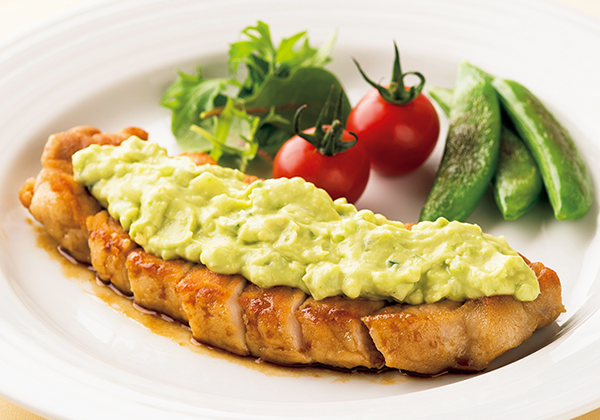

アボカド with 豚肉

豚ロースの南蛮ソテーアボタルソース添え
揚げないので手軽に調理でき、カロリーオフの料理です。ゆで卵の代わりにアボカドを使ったタルタル風ソースは少量のマヨネーズでOKです。
材料（2人分）
- 豚ロース切り身
- 2枚
- 小麦粉
- 適量
- サラダ油
- 大さじ1
- （調味料A）
- 醤油・酢・砂糖
- 各大さじ1
- （アボタルソース）
- アボカド
- 1/2個
- 新玉ねぎ・きゅうり
- 各20g
- （調味料B）
- 塩・こしょう
- 少々
- レモン汁
- 小さじ1
- マヨネーズ
- 小さじ1～2
- （付け合わせ）
- スナックえんどう
- 6本
- チェリートマト
- 4個
作り方
- 1
- 豚肉に小麦粉を薄くまぶす。スナックえんどうは筋をとる。（調味料A）は合わせておく。
- 2
- フライパンに油をいれて熱し、①の豚肉を中火で焼く。焼き色がついたら裏返し、スナックえんどうを加えて蓋をし、3分ほど蒸し焼きにする。
- 3
- スナックえんどうのみ取り出し、フライパンの油をキッチンペーパーで軽くふき取る。（調味料A）を加えて煮絡める。粗熱がとれたら2㎝幅に切る。
- 4
- （アボタルソース）アボカドはフォークで粗くつぶす。玉ねぎときゅうりはみじん切りにする。ボウルにいれて（調味料B）で調味する。
- 5
- 器に③の豚肉を盛り付けて④をかけ、スナックえんどうとチェリートマトを添える。